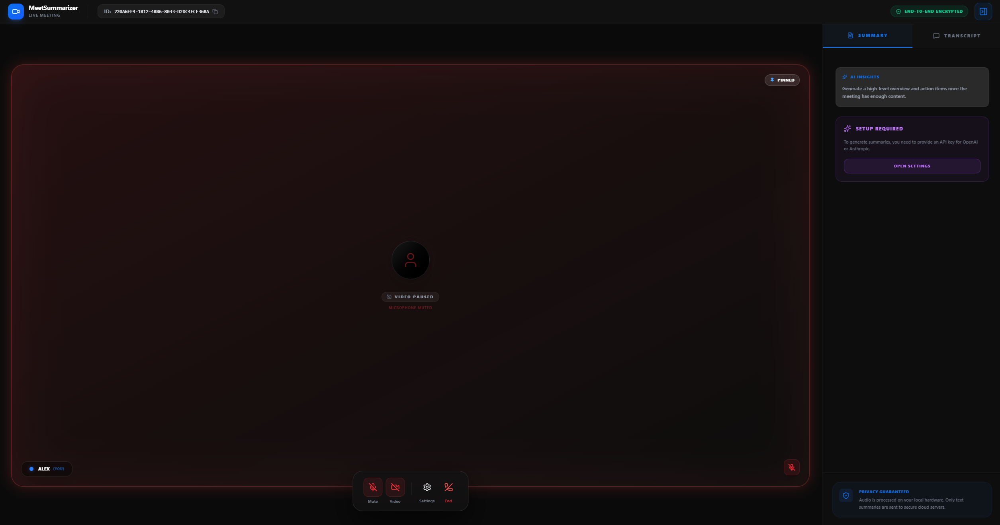

MeetSummarizer
Private, real-time meeting transcription without sending raw audio to the cloud.
Built an on-device speech-to-text pipeline around Whisper inference, overlapping audio windows, and peer-to-peer WebRTC media. The architecture keeps raw audio local while still supporting live captions and AI-generated meeting summaries.
- Constraint
- Prevent words from being cut at chunk boundaries.
- Decision
- Use a 3-second sliding overlap between audio windows.
- Outcome
- Local-first transcription with low-latency peer media.
- Electron
- React
- Whisper
- WebRTC
- Socket.io